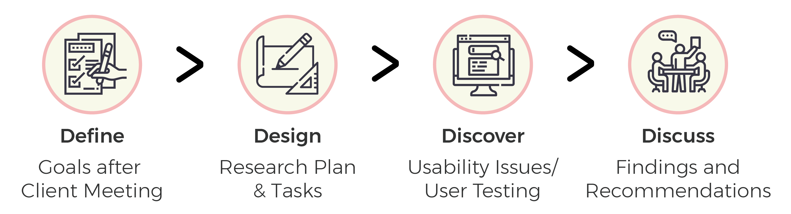
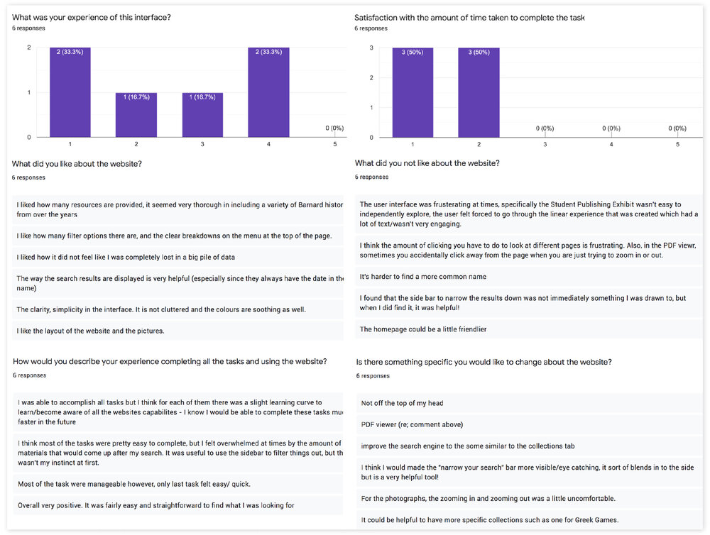

-
Client:
Barnard College (worked with Center for Digital Experiences)
-
Guide:
Prof. Elena Villaespesa, Prof. Madhav Tankha
-
Team
Hiral Parekh, Lillian Gooden, Mayank Gupta, Mohammed Hosen
-
Tools:
Adobe Illustrator, Adobe Photoshop, Zoom
-
Project timeline:
7 weeks, Spring 2020
Barnard Digital Collections Remote User Testing
Barnard Digital Collections offers students and researchers with a vast collection of digital archival material. It gives users free access to nearly 85,000 academic sources, including but not limited to newspapers, scrapbooks, photographs etc. No major design changes have been made to the website since its inception.
The goal of this study was to test the desktop version of the digital collections website to recognise and address some of the main usability issues. The client wanted us to address the issues related to particular features of the website, including the filters and exhibits section.
lack of discoverability & unclear navigation
The overall impression of the website was pretty good amongst the users. But as they tried accessing the website for specific content some major usability issues were highlighted.
enhanced contrast and accessability
We propsed simple solutions that could be easily implemented through some minor developement changes. We made sure to keep our recommendations in sync with the websites original theme that affords efficient researching methods for every user group.
my role
I worked alongside Hiral, Mohammed and Lillian. Although most aspects of the project were completed by the team together, I focused on working through our first recommendation and designing proposed mock-ups for it. I also actively participated in the entire research process including brainstorming user tasks and compiling a sound final analysis report. I moderated 2 interviews and and participated as a note taker in other 2.
Client Meeting
After our initial briefing from the client we were able to understand their major concerns. We also got to know more about the user group and the fact that 85% of the users use the desktop website. A website update was in the pipeline and hence the client thought fit to user test the website and eventually improve the user experience.
Our clients also helped us by passing on the survey to revelvant and exisiting users. This really streamlined our research process and we could gove more appropriate and revelant solutions.
define+design+discover+dicuss
define
Content is added to the Barnard Digital Collection regularly, but no major redesign has been done. The website is used an by array of users, including Barnard students and staff members and external researchers. 85% of the users use the desktop version of the website.
Some of the key concerns mentioned by the client are as follows:
- They wanted to enhance the discoverability of the website for better user engagement.
- They were concerned about the metadata (filters) categories being confusing to users.
- In their opinion the exhibits section was kind of low priority and underutilized, so they had no idea about how the users react to it.
design
We brainstormed and shortlisted 4 main tasks based on a given scenario to test different website features. Our tasks were defined comprehensively to mimic actual website usage. We made sure to address the goals and priorities defined by our client while testing the website.
Scenario and Tasks:We presented the users with the following scenario to perform all the tasks.
“Imagine that you are an independent researcher looking for information on student life at Barnard College in the 1960s and ’70s. You have come to the Barnard Digital Collections portal to source materials from their archive.”
Task 1Find the digital exhibit on Student Publishing.
Task 2Martha Stewart is a notable alumnus from the class of 1964. Locate an article in the Barnard Alumnae magazine about her.
Task 3Your research involves second-wave feminists’ concerns for women in higher education. Search for proposals on this subject matter in the digital collection.
Task 4You are a historical researcher looking for images of Greek games held at Barnard in 1966. Try finding the photos using Barnard’s digital collection.
discover
Out of a sample size of 20 we shortlisted 8 prospective candidates for our study. We selected a blend of candidates from Barnard students and staff and some external researchers (Figure 1).
Some of them had never used digital archives for research (Figure 2).
Figure 1
Figure 2
barnard students, staff & independent researchers
While shortlsiting the candidates from the pool of users we made sure to select people from varying backgrounds and experiences. Hence our final list of 8 shortlisted candidates included Barnard students and staff and some independent researchers. This would help us cater to the needs of all user groups with a wider prespective.
remote user testing
We reached out to all the 8 propective candidates via email to finalize a date and time for their interview, along with a consent form that had to be signed before the interview. The user tests were initially planned to be conducted in person, but due to the unprecedented situations from COVID-19, we had to switch to remote methods. We conducted our users tests using the Zoom platform.
User Testing
We aimed to understand the following through these interviews
- User needs and pain points
- User patterns in terms of task difficulty and completion
- Ease of navigation amongst a particular user group
An average interview lasted about 45 mins, during which the participants were asked to share their screen and think aloud. We also recorded these session for cross referencing.
Post Test Questionarre
The interviews' were followed by a post test questionarre to record the participants overall experience with the website and any other recommendations.
data analysis
Analysis
All the team members individually conducted 2 users tests as the moderator, while one of the others was responsible for taking down notes. The amount of data we gathered at the end of the study was overwhelmingly large, so in order to simplify the process we independently analysed the data from our interviews and wrote our own findings. After careful analysis and discussion we compiled 4 final recommendations based on our findings from the research process.
High Level Findings
Here is the summary of our high-level findings from the entire website experience and for each task:
- Overall the users found the website to be aesthetically pleasing, particularly the colour scheme.
- The metadata (filters) categories are really helpful means to narrow down the search results.
- The number of metadata (filter) categories is too overwhelming for some of the users.
- Inexperienced users had a hard time finding relevent results for the first task as they were not aware of the advance search operators ("AND", "OR", "NOT").
- The “View Object” button in the exhibits section should look more clickable.
design solutions
We prioritised 4 usability issues that would significantly improve the websites user experience.
Easily missed Narrow Your Search Panel & Vague End Date Error
- 37.5% of our users completely missed out the “Narrow Your Search” section.
- It was also noted that 75% of the users struggled with the date filter, as not entering the “End” date gave them a vague error with no feedback on how to correct that.
Recommendation #1
Added Contrast & Better Signifiers
- Make the “Narrow Your Section” more contrasting which would draw their attention and make the panel more noticeable.
- Provide an error message that better signifies the problem and helps the user understand how to correct it. In addition to that we can also add an information button to help prevent that error.
Inefficient Global Search
- Inexperienced researchers were not always aware about the advance search options like “AND”, “OR” or double quotes etc.
- Although the digital collection website offers these features they are not prominent on every page and their functionality is hidden.
Recommendation #2
Added Contrast & Better Signifiers
Add the button for advance operators on top of the global search bar (as shown on figure below). Adding them would increase users research efficiency.
Unclear Navigation
The digital exhibits section features only “Next” and “Prev” navigation buttons. This way the user is unaware of all the different exhibits the section has to offer. The users also don’t get a sense of how far along have they come in the collection.
Recommendation #3
Better sense of place using Sub-navigation
Adding an additional navigation menu with the titles of each individual exhibit under the main headings.
Clipped Photographs: "Missing Information"
After finding and clicking on a photo to find out more details about it, users were presented with a default cropped view of the image. Users on the whole found it confusing as they thought they have landed on a different photo altogether. This also resulted in low visibility of function button like “zoom in” and “zoom out”.
Recommendation #4
Better sense of place using Sub-navigation
Displaying the photo in its entirety when clicked on for the first time, giving the user the choice to zoom in or out. Changing the style of the button to make them look more prominent.
Client Presentation
Our client really appreciated all of our recommendations and the fact that they are easy fixes that can be implemented easily through some programming modifications. Even though they were aware about most of these issues, they never really addressed these issues as major user experience issues and our study really helped them streamline these issues and work on correcting them.
After Math
After our final presentation to the client we discussed the possibility of a horizontal filter section for better discoverability. But after making a mockup for this idea we concluded that it was cluttered and not that user friendly. A vertical dropdown also required careful mouse navigation from the user which can be inconvinient.
What I Learned!
Since the tests were conducted in a remote setting, it was easier to make the participants feel more comfortable. Although I wish we had run few more pilot tests before testing with actual users, this way we could have further perfected them for remote setting. I had a great time working with a team that works together like all the "UX Elements" in sync with each other to deliver the best results.
Next Steps
The next steps of this study could be, to user test the focusing only on meatadata categories and its user flows after these initial recommendations have been implemented.